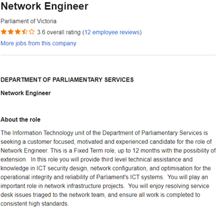

The Job I found that I thought at the time of writing this assessment would be an ideal job for me is this
Networking engineers are responsible for the planning, developing, and implementation of computer networks, as well as the troubleshooting, and monitoring of said networks. Without them, companies would be unable to have the complex LANS, WANS and everything in between that allow for the communications and inter-connectivity between the members of the company. My interest for this kind of work stems from the fact that during my previous studies, I found networking to be the most engaging and rewarding to undertake. There’s just something I like about seeing all the green lights light up on packet tracer and knowing that all the devices are finally able to talk to one another and everything is configured 100% correctly, and I think that a career in this field would be both fulfilling and interesting, being a part of the creation of various different network designs and builds.
For a network engineer position, depending on what kind of infrastructure the job is looking for you could be looking at any number of CISCO qualifications such as a CCNA or a CCNP in order to prove your familiarity and knowledge with the devices/systems. I believe a Network engineer should be proactive in their monitoring and developments of networks, and should additionally be able to work autonomously, as well as in a group setting.
While I don’t currently have any CISCO qualifications, I believe that due to my previous networking experience in my prior studies I am in a good enough spot that I could apply for and given some time to re-acquaint myself with the material pass and attain a CCT and begin working my way forward from there. I believe I would even be able to undertake a CCT while still doing my studies at RMIT, or I could spend time over the university holidays to acquire the qualification.